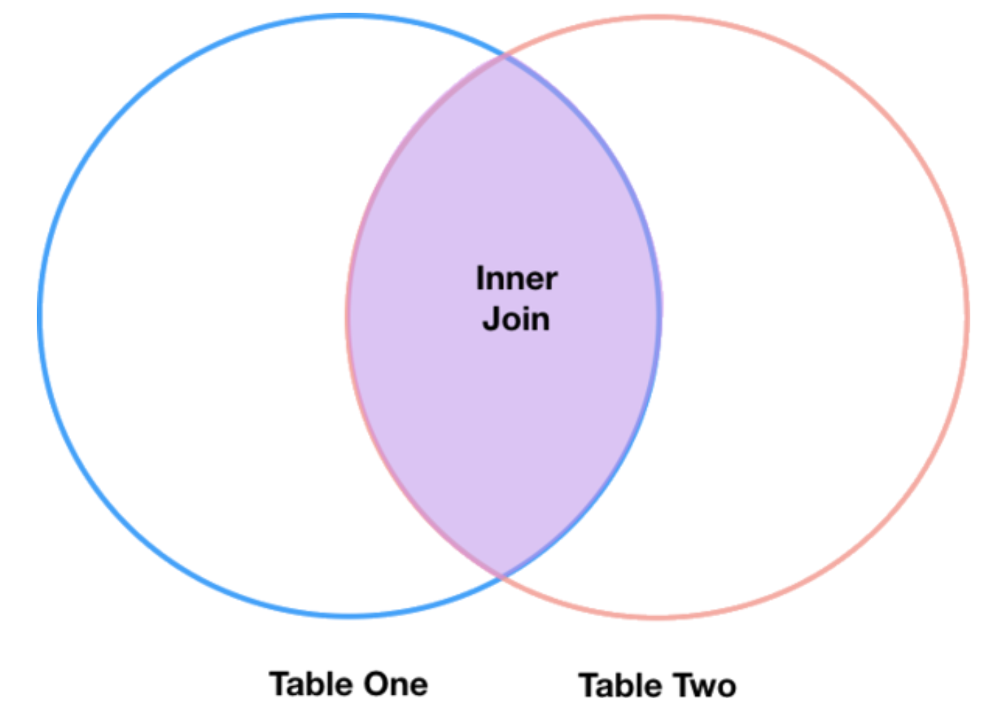
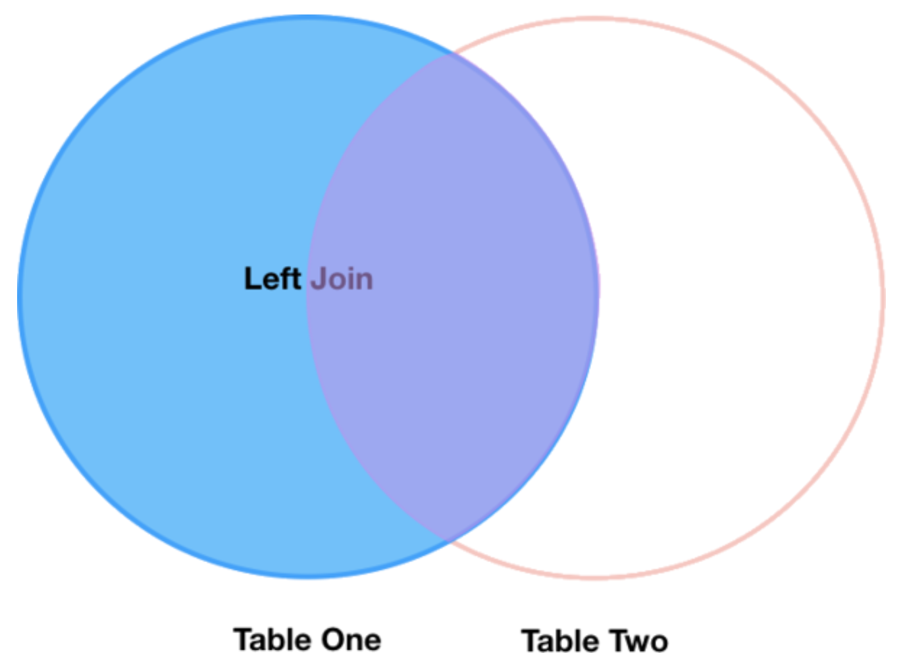

Pandas¶
Materials:¶
While NumPy can be used to important data, it is optimized around
numerical data. Many data sets include categorical variables. For these
data sets, it is best to use a library called pandas, which focuses
on creating and manipulating data frames.
import pandas as pd
Read data¶
With pandas imported, we can read in .csv files with the pandas
function read_csv().
In that function, we can specify the file we want to use with a URL or with the path to a local file as a string.
This saves the data in a structure called a DataFrame.
df = pd.read_csv("https://raw.githubusercontent.com/DeisData/python/master/data/gapminder.csv") # read in data
Our data is now saved as a data frame in Python as the variable df.
With the data now in the environment, we can take a look at the first
few rows with df.head().
df.head()
country |
year |
region |
population |
life_expectancy |
age5_surviving |
babies_per_woman |
gdp_per_capita |
gdp_per_day |
|
|---|---|---|---|---|---|---|---|---|---|
0 |
Afghanistan |
1800 |
Asia |
3280000.0 |
28.21 |
53.142 |
7.0 |
603.0 |
1.650924 |
1 |
Afghanistan |
1810 |
Asia |
3280000.0 |
28.11 |
53.002 |
7.0 |
604.0 |
1.653662 |
2 |
Afghanistan |
1820 |
Asia |
3323519.0 |
28.01 |
52.862 |
7.0 |
604.0 |
1.653662 |
3 |
Afghanistan |
1830 |
Asia |
3448982.0 |
27.90 |
52.719 |
7.0 |
625.0 |
1.711157 |
4 |
Afghanistan |
1840 |
Asia |
3625022.0 |
27.80 |
52.576 |
7.0 |
647.0 |
1.771389 |
We can see that this data frame has several different columns, with information about countries and demography.
Summarize data frame¶
It is important to understand the data we are working with before we
begin analysis. First, let’s look at the dimenions of the data frame
using df.shape. It gives the number of rows by the number of
columns.
df.shape
(14740, 9)
This shows that our data frame has 14740 rows by 9 columns.
We can also use df.columns to display the column names.
df.columns
Index(['country', 'year', 'region', 'population', 'life_expectancy',
'age5_surviving', 'babies_per_woman', 'gdp_per_capita', 'gdp_per_day'],
dtype='object')
Categorical variables¶
Next, let’s summarize the categorical, non-numerical variables. For instance, we can identify how many unique regions we have in the data set.
First, to select a column, we use the notation df['COLUMN_NAME'].
df['region']
0 Asia
1 Asia
2 Asia
3 Asia
4 Asia
...
14735 Africa
14736 Africa
14737 Africa
14738 Africa
14739 Africa
Name: region, Length: 14740, dtype: object
To identify unique entries in this column, we can use the .unique()
function.
df['region'].unique()
array(['Asia', 'Europe', 'Africa', 'America'], dtype=object)
The countries column has many unique values, so instead of
.unique(), we can use .nunique() to find the number of unique
countries in the data set.
df['country'].nunique()
182
Numerical variables¶
Numerical columns can be summarized in several ways. Let’s find the mean first.
To make things simpler, we’ll just do calculations on the
population, life_expectancy, and babies_per_woman columns.
We can put those names in an arrangement called a list and then
specify that list for the columns.
num_cols = [ 'population', 'life_expectancy', 'babies_per_woman' ] # numerical columns
df[num_cols]
population |
life_expectancy |
babies_per_woman |
|
|---|---|---|---|
0 |
3280000.0 |
28.21 |
7.00 |
1 |
3280000.0 |
28.11 |
7.00 |
2 |
3323519.0 |
28.01 |
7.00 |
3 |
3448982.0 |
27.90 |
7.00 |
4 |
3625022.0 |
27.80 |
7.00 |
... |
... |
... |
... |
14735 |
14255592.0 |
51.60 |
3.64 |
14736 |
14565482.0 |
54.20 |
3.56 |
14737 |
14898092.0 |
55.70 |
3.49 |
14738 |
15245855.0 |
57.00 |
3.41 |
14739 |
15602751.0 |
59.30 |
3.35 |
14740 rows × 3 columns
With this set of columns, we can run .mean() to find the mean of
each column.
df[num_cols].mean() # returns the mean of each column
population 2.252933e+07
life_expectancy 5.683453e+01
babies_per_woman 4.643472e+00
dtype: float64
If we want a larger variety of summary statistics, we can use the
.describe() method.
df[num_cols].describe()
population |
life_expectancy |
babies_per_woman |
|
|---|---|---|---|
count |
1.474000e+04 |
14740.000000 |
14740.000000 |
mean |
2.252933e+07 |
56.834526 |
4.643472 |
std |
9.307143e+07 |
15.868464 |
1.994833 |
min |
2.128000e+03 |
4.000000 |
1.130000 |
25% |
8.990308e+05 |
44.230000 |
2.630000 |
50% |
4.063978e+06 |
60.080000 |
5.060000 |
75% |
1.218722e+07 |
70.380000 |
6.440000 |
max |
1.376049e+09 |
83.300000 |
9.220000 |
We can also break down subgroupings of our data with the method
.groupby().
grouped_data = df.groupby('region')
grouped_data['population'].describe()
count |
mean |
std |
min |
25% |
50% |
75% |
max |
|
|---|---|---|---|---|---|---|---|---|
region |
||||||||
Africa |
4293.0 |
9.181313e+06 |
1.655128e+07 |
12522.0 |
996331.00 |
3457113.0 |
9901052.00 |
1.822020e+08 |
America |
2673.0 |
1.667833e+07 |
4.411806e+07 |
24000.0 |
331799.00 |
2843246.0 |
10061519.00 |
3.217736e+08 |
Asia |
4212.0 |
4.604245e+07 |
1.658010e+08 |
2128.0 |
512028.25 |
4011309.5 |
19517390.25 |
1.376049e+09 |
Europe |
3562.0 |
1.520351e+07 |
2.463153e+07 |
61428.0 |
2308682.00 |
5186801.5 |
10638884.75 |
1.484358e+08 |
Accessing rows and specific entries¶
You can also to access a specific row using df.loc[ROW, :]. The
colon specifies to select all columns for that row number.
df.loc[0, :] # the first row
country Afghanistan
year 1800
region Asia
population 3280000.0
life_expectancy 28.21
age5_surviving 53.142
babies_per_woman 7.0
gdp_per_capita 603.0
gdp_per_day 1.650924
Name: 0, dtype: object
We can use .loc to find the value of specific entries, as well.
df.loc[0, 'country'] # first row entry for column
'Afghanistan'
Question 1: Summarizing data¶
Print out the summary statistics for columns age5_surviving,
gdp_per_day, and gdp_per_capita.
### your code below:
Solution
df[['age5_surviving', 'gdp_per_day', 'gdp_per_capita']].describe()
Manipulate data¶
Subset by row¶
Sometimes, we want to create a subset of the main data frame based on
certain conditions. Below, we take all of the rows where babies_per_woman is greater or
equal to 4 with df['babies_per_woman'] >= 4 and assign this to a new
data frame.
To check that this was done correctly, we can look at the minimum of the
babies_per_woman column in the new data frame with .min().
# take all rows where babies_per_woman is greater or equal to 4 and make a new data frame
df_4 = df[df['babies_per_woman'] >= 4]
df_4['babies_per_woman'].min()
4.0
We can use the following operators to make subsets:
Equals:
==Not equals:
!=Greater than, less than:
>,<Greater than or equal to:
>=Less than or equal to:
<=
We can also subset with categorical variables. Here, we take all rows where the country is Hungary.
df_hungary = df[df['country'] == 'Hungary']
pd.unique(df_hungary['country'])
array(['Hungary'], dtype=object)
Math¶
If we multiply a data frame by a single number, each value in the column will be muliplied by that value.
df['babies_per_woman'] * 1000
0 7000.0
1 7000.0
2 7000.0
3 7000.0
4 7000.0
...
14735 3640.0
14736 3560.0
14737 3490.0
14738 3410.0
14739 3350.0
Name: babies_per_woman, Length: 14740, dtype: float64
We can also do math between columns, since they have the same length. Elements of the same row are added, substacted, multiplied, or divided.
Here, we subtract the life_expectancy column from the
age5_surviving column and assign it to a new column called
life_difference.
df['life_difference'] = df['age5_surviving'] - df['life_expectancy']
print(df['life_difference'])
0 24.932
1 24.892
2 24.852
3 24.819
4 24.776
...
14735 39.200
14736 37.130
14737 35.970
14738 34.900
14739 32.740
Name: life_difference, Length: 14740, dtype: float64
This new column is now reflected in the data frame.
print(df.columns)
Index(['country', 'year', 'region', 'population', 'life_expectancy',
'age5_surviving', 'babies_per_woman', 'gdp_per_capita', 'gdp_per_day',
'life_difference'],
dtype='object')
Question 2: Working with data¶
Create a subset of data from Lithuania.
Within that subset, calculate the mean GDP per 1000 people across entries.
Hint: Multiply per capita GDP by 1000.
### Your code here:
Solution
df_lth = df[df['country']=='Lithuania']
df_lth['gdp_per_1000'] = 1000 * df_lth['gdp_per_capita']
print(df_lth['gdp_per_1000'].mean())
Create your own data frame¶
To make your own data frame without a .csv, we use the function
pd.DataFrame(). There are many ways to use this function to
construct a data frame.
Here, we show how to convert a dictionary of lists into a data frame. Each list will be its own column, and you need to make sure the lists are all the same length. The keys of each list should be the column names.
data_dict = {
'a': [1, 3, 5],
'b': ['apple', 'banana', 'apple'],
'c': [-2., -3., -5.]
}
pd.DataFrame(data_dict)
a |
b |
c |
|
|---|---|---|---|
0 |
1 |
apple |
-2.0 |
1 |
3 |
banana |
-3.0 |
2 |
5 |
apple |
-5.0 |
You can also use lists of lists or 2D NumPy arrays to create data
frames. Each list will be a row, instead of a column, and you will need
to specify the column name as another argument in pd.DataFrame()
called columns.
data_list = [
[1, 'apple', -2.],
[3, 'banana', -3.],
[5, 'apple', -5.]
]
pd.DataFrame(data_list, columns=['a', 'b', 'c'])
a |
b |
c |
|
|---|---|---|---|
0 |
1 |
apple |
-2.0 |
1 |
3 |
banana |
-3.0 |
2 |
5 |
apple |
-5.0 |
Note: we need to save this as a variable to use it in the future.
Sort data frame¶
To sort the rows in a data frame by the value of a column, we can use
the .sort_values() method. The argument by requires a list with
a column name.
Again, if you want to use the sorted version in the future, you need to save it as a new variable.
my_df = pd.DataFrame(data_list, columns=['a', 'b', 'c'])
my_df.sort_values(by=['b'])
a |
b |
c |
|
|---|---|---|---|
0 |
1 |
apple |
-2.0 |
2 |
5 |
apple |
-5.0 |
1 |
3 |
banana |
-3.0 |
You can also sort descending by specifying the ascending=False
argument.
my_df.sort_values(by=['b'], ascending=False)
a |
b |
c |
|
|---|---|---|---|
1 |
3 |
banana |
-3.0 |
0 |
1 |
apple |
-2.0 |
2 |
5 |
apple |
-5.0 |
If desired, multiple column names can be specified, with priority given to those first in the list.
my_df.sort_values(by=['b', 'a'], ascending=False)
a |
b |
c |
|
|---|---|---|---|
1 |
3 |
banana |
-3.0 |
2 |
5 |
apple |
-5.0 |
0 |
1 |
apple |
-2.0 |
Add rows¶
There are multiple ways to add a new row to a data frame. The most
straightforward way is to use the pandas.concat() function with a
new data frame with just one row.
We put the the two data frames into a list, and we set axis=0 to
make sure it adds as a row. We will specify .reset_index(drop=True)
to reset row numbers to account for the new row.
new_row = pd.DataFrame({
'a': [2],
'b': ['banana'],
'c': [-1.]
})
my_df2 = pd.concat([my_df, new_row], axis=0).reset_index(drop=True)
print(my_df2)
a b c
0 1 apple -2.0
1 3 banana -3.0
2 5 apple -5.0
3 2 banana -1.0
You can also use this approach to add multiple rows, as well, by having the new data frame consist of multiple rows.
new_rows = pd.DataFrame({
'a': [6, 5],
'b': ['banana', 'orange'],
'c': [-4., -9.]
})
my_df3 = pd.concat([my_df2, new_rows], axis=0).reset_index(drop=True)
print(my_df3)
a b c
0 1 apple -2.0
1 3 banana -3.0
2 5 apple -5.0
3 2 banana -1.0
4 6 banana -4.0
5 5 orange -9.0
Join data frames¶
A critical tool in data wrangling is combining data frames that share common values, columns, or identifiers.
Let’s important two new .csv files and join them.
surveys_df = pd.read_csv("https://raw.githubusercontent.com/DeisData/python/master/data/surveys.csv", keep_default_na=False, na_values=[""])
species_df = pd.read_csv("https://raw.githubusercontent.com/DeisData/python/master/data/species.csv", keep_default_na=False, na_values=[""])
print(surveys_df.head())
print(species_df.head())
record_id month day year plot_id species_id sex hindfoot_length \
0 1 7 16 1977 2 NL M 32.0
1 2 7 16 1977 3 NL M 33.0
2 3 7 16 1977 2 DM F 37.0
3 4 7 16 1977 7 DM M 36.0
4 5 7 16 1977 3 DM M 35.0
weight
0 NaN
1 NaN
2 NaN
3 NaN
4 NaN
species_id genus species taxa
0 AB Amphispiza bilineata Bird
1 AH Ammospermophilus harrisi Rodent
2 AS Ammodramus savannarum Bird
3 BA Baiomys taylori Rodent
4 CB Campylorhynchus brunneicapillus Bird
The shared column between these data frames is species_id, so this
is the column we will want to join around.
Inner Join¶
The pandas function for performing joins is called merge() and an
Inner join is the default option.
Inner joins take all rows from both data frames that share values from
an identifier column. In our case, this means that our joined data frame
will only include rows with species identifiers present in
species_df and surveys_df.

merged_inner = pd.merge(left=surveys_df, right=species_df, left_on='species_id', right_on='species_id')
# In this case `species_id` is the only column name in both dataframes, so if we skipped `left_on`
# And `right_on` arguments we would still get the same result
# What's the size of the output data?
print(merged_inner.shape)
merged_inner
(34786, 12)
record_id |
month |
day |
year |
plot_id |
species_id |
sex |
hindfoot_length |
weight |
genus |
species |
taxa |
|
|---|---|---|---|---|---|---|---|---|---|---|---|---|
0 |
1 |
7 |
16 |
1977 |
2 |
NL |
M |
32.0 |
NaN |
Neotoma |
albigula |
Rodent |
1 |
2 |
7 |
16 |
1977 |
3 |
NL |
M |
33.0 |
NaN |
Neotoma |
albigula |
Rodent |
2 |
22 |
7 |
17 |
1977 |
15 |
NL |
F |
31.0 |
NaN |
Neotoma |
albigula |
Rodent |
3 |
38 |
7 |
17 |
1977 |
17 |
NL |
M |
33.0 |
NaN |
Neotoma |
albigula |
Rodent |
4 |
72 |
8 |
19 |
1977 |
2 |
NL |
M |
31.0 |
NaN |
Neotoma |
albigula |
Rodent |
... |
... |
... |
... |
... |
... |
... |
... |
... |
... |
... |
... |
... |
34781 |
28988 |
12 |
23 |
1998 |
6 |
CT |
NaN |
NaN |
NaN |
Cnemidophorus |
tigris |
Reptile |
34782 |
35512 |
12 |
31 |
2002 |
11 |
US |
NaN |
NaN |
NaN |
Sparrow |
sp. |
Bird |
34783 |
35513 |
12 |
31 |
2002 |
11 |
US |
NaN |
NaN |
NaN |
Sparrow |
sp. |
Bird |
34784 |
35528 |
12 |
31 |
2002 |
13 |
US |
NaN |
NaN |
NaN |
Sparrow |
sp. |
Bird |
34785 |
35544 |
12 |
31 |
2002 |
15 |
US |
NaN |
NaN |
NaN |
Sparrow |
sp. |
Bird |
34786 rows × 12 columns
The result merged_inner data frame contains all of the columns from
surveys_df (record_id, month, day, etc.) as well as all
the columns from species_df (species_id, genus, species,
and taxa).
Left join¶
What if we want to add information from species_df to
surveys_dfwithout losing any of the information from
surveys_df? In this case, we use a different type of join called a
left join, where we keep all rows from the data frame we call left (in
our case surveys_df) and only take rows from the right data frame
(species_df) with species IDs in surveys_df.

A left join is performed in pandas by calling the same merge()
function used for inner join, but using the how='left' argument.
merged_left = pd.merge(left=surveys_df, right=species_df, how='left', left_on='species_id', right_on='species_id')
merged_left
record_id |
month |
day |
year |
plot_id |
species_id |
sex |
hindfoot_length |
weight |
genus |
species |
taxa |
|
|---|---|---|---|---|---|---|---|---|---|---|---|---|
0 |
1 |
7 |
16 |
1977 |
2 |
NL |
M |
32.0 |
NaN |
Neotoma |
albigula |
Rodent |
1 |
2 |
7 |
16 |
1977 |
3 |
NL |
M |
33.0 |
NaN |
Neotoma |
albigula |
Rodent |
2 |
3 |
7 |
16 |
1977 |
2 |
DM |
F |
37.0 |
NaN |
Dipodomys |
merriami |
Rodent |
3 |
4 |
7 |
6 |
1977 |
7 |
DM |
M |
36.0 |
NaN |
Dipodomys |
merriami |
Rodent |
4 |
5 |
7 |
16 |
1977 |
3 |
DM |
M |
35.0 |
NaN |
Dipodomys |
merriami |
Rodent |
... |
... |
... |
... |
... |
... |
... |
... |
... |
... |
... |
... |
... |
35544 |
35545 |
12 |
31 |
2002 |
15 |
AH |
NaN |
NaN |
NaN |
Ammospermophilus |
harrisi |
Rodent |
35545 |
35546 |
12 |
31 |
2002 |
15 |
AH |
NaN |
NaN |
NaN |
Ammospermophilus |
harrisi |
Rodent |
35546 |
35547 |
12 |
31 |
2002 |
10 |
RM |
F |
15.0 |
14.0 |
Reithrodontomys |
megalotis |
Rodent |
35547 |
35548 |
12 |
31 |
2002 |
7 |
DO |
M |
36.0 |
51.0 |
Dipodomys |
ordii |
Rodent |
35548 |
35549 |
12 |
31 |
2002 |
5 |
NaN |
NaN |
NaN |
NaN |
NaN |
NaN |
NaN |
Export data frame as .csv¶
If you have made modifications to a data set in Python and want to
export that to a new .csv, you can easily do that with the .to_csv()
method that all pandas data frames have.
%%script false --no-raise-error ## comment this line to run the cell
df_hungary.to_csv('gapminder_hungary.csv', index=False) # index = False makes sure row names are not saved as their own columns
Question 3: Putting it together¶
Create two data frames called A and B with at least 3 columns
and 4 rows. Make one column in both A and B an identifier
column, with at least one ID present in both data frames. Use a left
join with A as the left data frame, and call the new data frame
C. Display the data frame, and export it as a .csv file.
### Your code here:
Solution
A = pd.DataFrame({
'ident': [0, 1, 2, 3],
'size': [2.1, 5.2, 3.1, 1.5],
'location': ['IL', 'MA', 'CA', 'NE']
})
B = pd.DataFrame({
'ident': [5, 4, 0, 1, 3],
'animal': ['monkey', 'giraffe', 'ape', 'lion', 'fish'],
'sex': ['M', 'F', 'F', 'F', 'M']
})
C = pd.merge(left=A, right=B, how='left', left_on='ident', right_on='ident')
print(C)
C.to_csv('joined_data.csv', index=False)
ident size location animal sex
0 0 2.1 IL ape F
1 1 5.2 MA lion F
2 2 3.1 CA NaN NaN
3 3 1.5 NE fish M
Resources¶
This lesson is adapted from Software Carpentry.